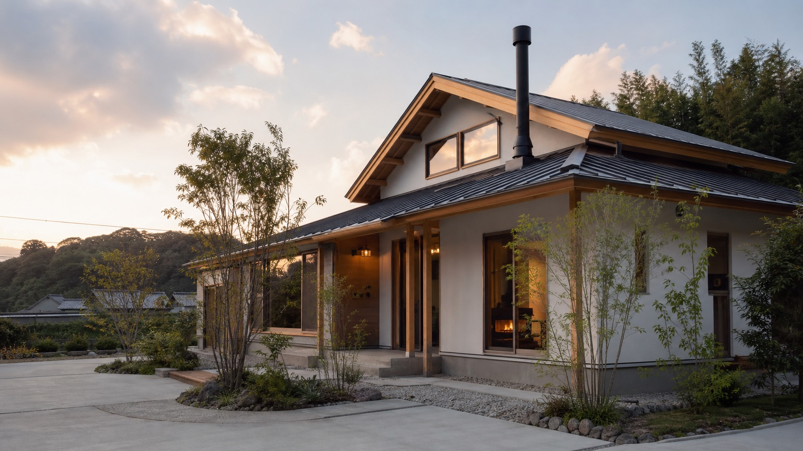
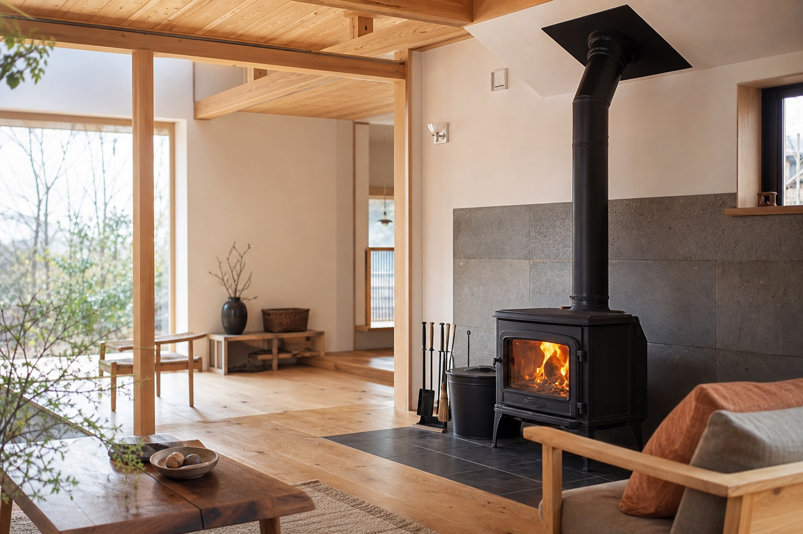
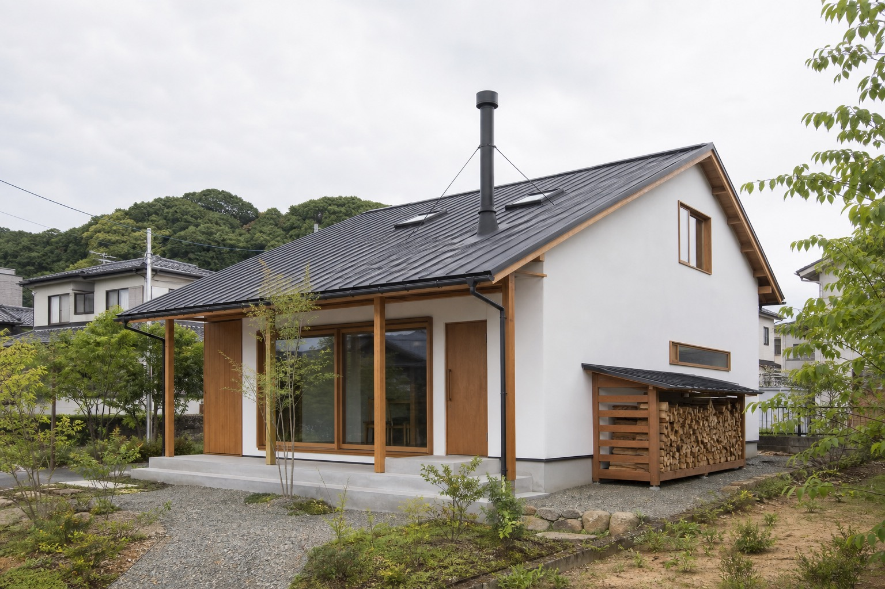
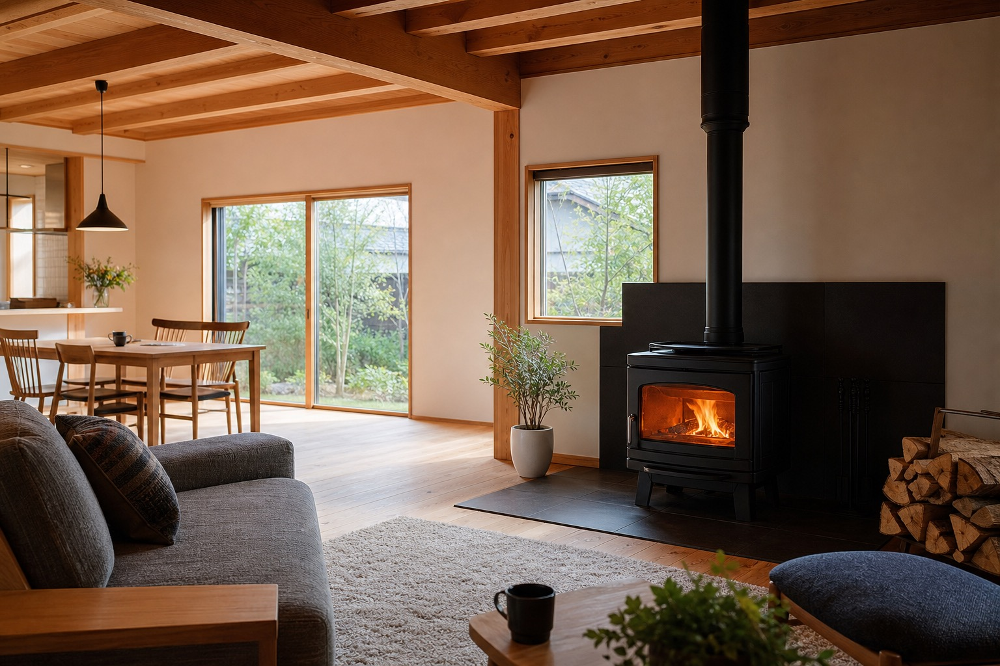
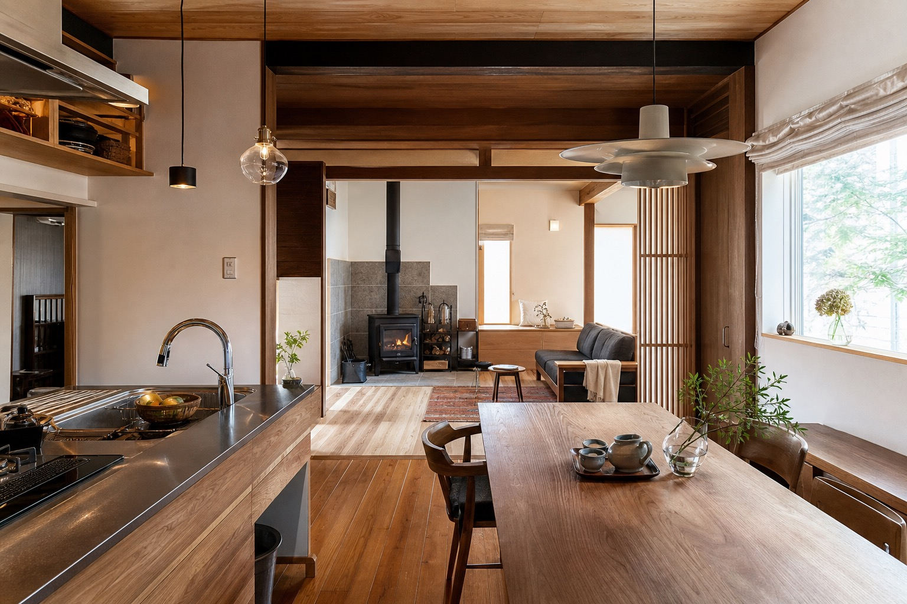

薪ストーブ専門事業
薪ストーブの販売、設計、施工、煙突工事、煙突掃除、修理などのアフターフォロー。

仮画像Concept
クラウドパイプは、薪ストーブ・ペレットストーブの専門店であり、株式会社 末永工務店の建築力を背景にした住まいの相談窓口です。ストーブ本体だけでなく、煙突、屋根、壁、メンテナンスまで含めて考えられることが大きな強みです。
既存サイトの情報をもとに、今回のデモでは「安全な設計」「自社によるアフターフォロー」「ログハウス・一般住宅・リフォームまで相談できる幅」を短く伝える構成にしています。

仮画像What We Value
薪ストーブは、癒しだけでなく安全設計と継続的な手入れが必要な設備です。専門店と工務店の両方の視点で、導入前の計画から設置後の使い方まで一貫して支えます。
Service
薪ストーブの販売、設計、施工、煙突工事、煙突掃除、修理などのアフターフォロー。
ペレットストーブの取扱い。燃料の在庫状況や詳細は問い合わせ前提で案内。
ログハウス、一般住宅。自然、揺らぎ、環境を意識した住まいづくり。
リフォーム、リノベーション、サウナ、ピザ窯など。詳細条件は要確認。
Reason
販売・設計・施工だけでなく、煙突掃除や修理まで自社で行う方針が既存サイトで確認できます。
煙突、壁、屋根、断熱、改修など、ストーブ単体ではなく住まい全体で相談しやすい構成です。
鹿児島・宮崎・熊本、九州一円を対応エリアとして掲げています。
既存サイトに求人のお知らせがあり、薪ストーブや建築に興味がある方への連絡導線を設けます。
Gallery
実在する案件名や施工実績名は作らず、公開時に公式写真へ差し替えられる構成にしています。



Company
Contact
来店相談、薪ストーブ導入、煙突掃除、修理、住宅やリフォームの相談など、目的に合わせて問い合わせできるデモフォームです。
このフォームは営業提案用サンプルです。実際には送信されません。